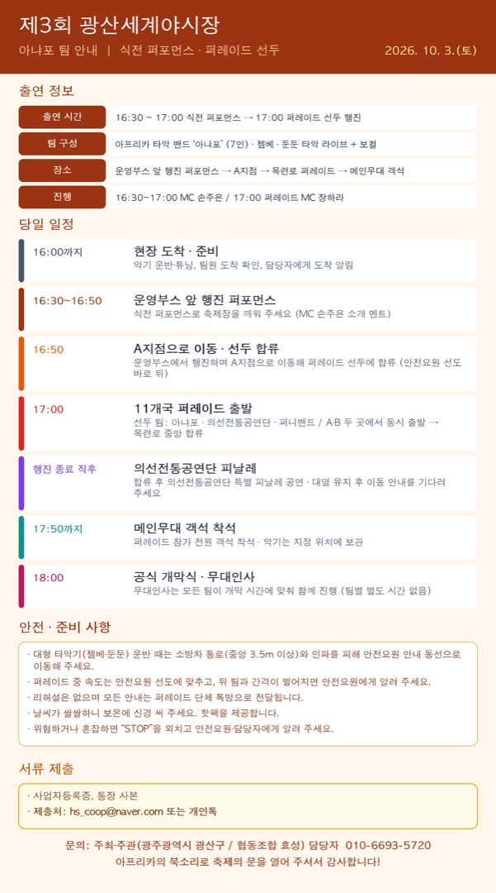

이미지를 누르면 크게 볼 수 있고, 길게 눌러 저장할 수 있습니다.
아프리카 타악 밴드 ‘아냐포’는 올해 축제의 식전 퍼포먼스와 11개국 거리 퍼레이드의 선두를 맡아 주십니다.
10월 3일(토) 일정과 준비 사항을 안내드립니다. (첨부 이미지 참고)
출연 정보
- 일시: 2026. 10. 3.(토) 16:30 ~ 17:00 식전 퍼포먼스 → 17:00 퍼레이드 선두 행진
- 팀 구성: 아프리카 타악 밴드 ‘아냐포’ (7인) · 젬베·둔둔 타악 라이브 + 보컬
- 장소: 운영부스 앞 행진 퍼포먼스 → A지점 → 목련로 퍼레이드 → 메인무대 객석
- 진행: 16:30~17:00 MC 손주은 / 17:00 퍼레이드 MC 장하라
당일 일정
- 16:00까지 현장 도착 → 악기 운반·튜닝, 팀원 도착 확인, 담당자에게 도착 알림
- 16:30~16:50 운영부스 앞 행진 퍼포먼스 (MC 손주은 소개 멘트)
- 16:50 운영부스에서 행진하며 A지점으로 이동해 퍼레이드 선두에 합류 (안전요원 선도 바로 뒤)
- 17:00 11개국 퍼레이드 출발: 선두 팀 아냐포 · 의선전통공연단 · 퍼니밴드 / A·B 두 곳에서 동시 출발 → 목련로 중앙에서 하나로 합류
- A지점(6팀): 중국 → 인도 → 일본 → 네팔 → 캄보디아 → 필리핀
- B지점(5팀): 태국 → 스리랑카 → 우즈베키스탄 → 베트남 → 한국
- 행진 종료 직후 의선전통공연단 특별 피날레 공연 (대열 유지 후 이동 안내를 기다려 주세요.)
- 17:50까지 퍼레이드 참가 전원 메인무대 객석 착석 (악기는 지정 위치에 보관)
- 18:00 공식 개막식: 무대인사는 모든 팀이 개막 시간에 맞춰 함께 진행하며, 팀별 별도 시간은 없습니다.
안전·준비 사항
- 대형 타악기(젬베·둔둔) 운반 때는 소방차 통로(중앙 3.5m 이상)와 인파를 피해 안전요원 안내 동선으로 이동해 주세요.
- 퍼레이드 중 속도는 안전요원 선도에 맞추고, 뒤 팀과 간격이 벌어지면 안전요원에게 알려 주세요.
- 리허설은 없으며 모든 안내는 퍼레이드 단체 톡방으로 전달됩니다.
- 날씨가 쌀쌀하니 보온에 신경 써 주세요. 핫팩을 제공합니다.
- 위험하거나 혼잡하면 “STOP”을 외치고 안전요원·담당자에게 알려 주세요.